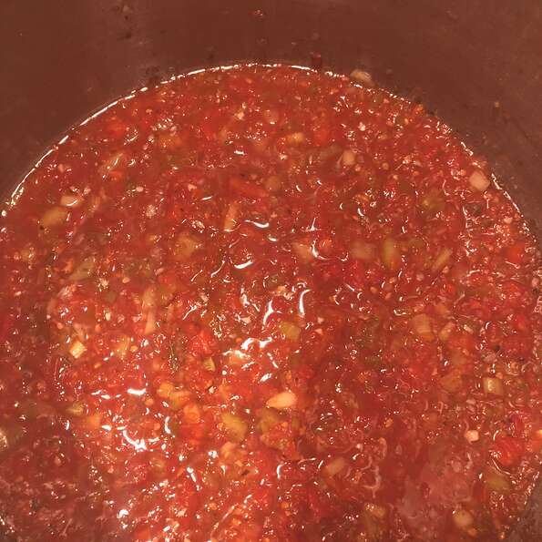

Tomato Salsa

Description
This chunk, smoky salsa tastes amazing with tortilla.
Roasted tomatoes, garlic, onion and jalapeno are blended with cilantro
and cunim to create one of the tastiest and easiest Mexican-inspired recipes you'll ever try.
Ingredients
- 12 roma (plum tomatoes)
- 2 cloves garlic, unpeeled
- 1 small onion, quartered
- 1 jalapeno chile pepper
- 1 1/2 tablespoons olive oil
- 1 table spoon ground cumin
- 1/4 teaspoon salt
- 3 tablespoons fresh lime juice
- 1/4 cup chopped fresh cilantro
Steps
- Preheat the banking dish,palce roma(plum) tomatoes,garlic,onion and jalapeno chile pepper, Drizzle with olive oil.
- Checking often,or until outsides of vegetables are charred.
- Remove vegetables from heat. Remove and discard tomato cores,jalapeno stem and garlic skins.
- In a food processor, coarsely chop the charred vegetables. Transfer to a medium bowl and mix in cumin, salt juice and cilantro.